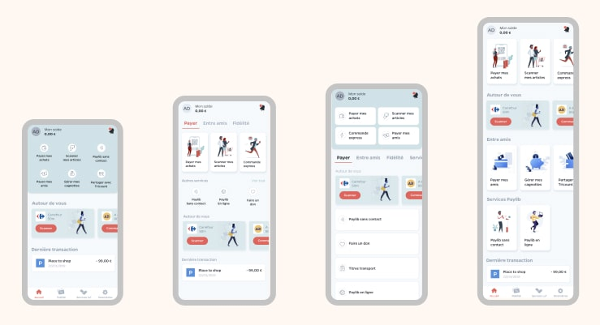
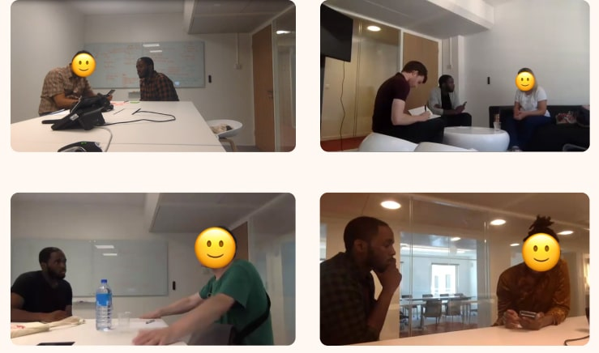
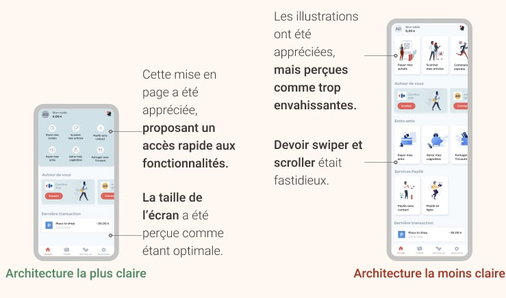

Contexte
Ce projet de refonte, qui est de loin le plus long et le plus complet sur lequel j'ai travaillé, est le résultat de plusieurs observations faites au sein de notre équipe produit tout au long de l'année 2019 :
La présentation actuelle des fonctionnalités était source de confusion pour les utilisateurs, notamment en ce qui concerne l'architecture de l'information. En effet, l'affichage des fonctionnalités en liste verticale n'offrait pas une présentation optimale. De plus, l'architecture n'était pas adaptée à l'ajout de nouvelles fonctionnalités. Et pour finir, notre interface commençait à être dépassée par rapport à celle de nos concurrents.
Rôle : Réalisation de l'ensemble de la recherche utilisateur, travaillant en étroite collaboration avec Bacary Mbaye (Product Owner), Aymeric Sauce (Marketing Produit), Naama Bassan (Lead Design), Ane Uriarte & Martin Berbesson (Product Designers). Supervisé par Alex Szyda (CPO)
Méthodologie : Benchmark concurrentiel, analyse heuristique, tests utilisateurs,
wireframes, prototype, tests guerilla, animation d'ateliers de co-conception
Outils : Google Forms, Typeform, Figma, Sketch, Marvel, Invision,
Notion
Durée: Environ 10 mois (et en cours!)
La solution que nous avons choisi de mettre en œuvre a été de complétement repenser notre écran d'accueil.
J'ai commencé ce projet en me concentrant sur l'aspect UX, qui devaient prendre en compte deux points de vue majeurs :
d'abord les besoins des utilisateurs (évidemment !), à la fois les nouveaux venus pour les guider dans la découverte de l'application,
mais aussi les anciens, car ils ne doivent pas être perdus lors du ré-apprentissage de l'application.
Mais il fallait également prendre en compte les retours des collaborateurs internes pour impliquer tout le monde au mieux dans ce projet.
L'impact d'une refonte est non-négligeable, et ce pour de nombreuses équipes.
Il était donc plus que nécessaire
d'inclure les parties prenantes dans le processus de conception et de bénéficier de leurs expertises propres sur le produit.
Animation des ateliers
L'étape des ateliers a duré au total plus de 3 mois. J'ai mené les 7 ateliers, avec plus de 35 participants issus de différentes équipes. J'ai choisi d'utiliser la "méthodologie du 6-to-1" pour générer le plus d'idées possible et identifier des patterns d'interfaces qui seraient plus fréquemment utilisés que d'autres. Le 6-to-1 est une méthode d'atelier, où les participants produisent 6 grilles différentes, puis combinent ces 6 grilles en une version plus complète, qui est leur livrable final pour l'atelier.


En partageant les idées dans chaque groupe, de premières écrans ont été rapidement générées et cela permet de réaliser de premiers prototypes très rapidement.
C'est aussi un moyen très efficace de voir quelles idées reviennent le plus souvent, et de remarquer celles qui ont suscité le plus d'intérêt !
Les nombreux retours nous ont permis de recueillir des attentes concernant la nouvelle Maison, telles que :
• Une nécessité de catégoriser les différentes fonctionnalités.
• Une volonté d'avoir une nouvelle architecture de l'information,
avec deux structures récurrentes parmi les propositions : une architecture profonde via des menus ou une mise en page plus "aplatie"
avec un affichage simplifié des fonctionnalités.
• Un besoin de meilleurs wordings pour désigner les fonctionnalités,
avec une aide plus contextuelles. Par exemple, en nommant une fonctionnalité
"Payer en magasin" au lieu de quelque chose de plus abstrait comme "Payer avec Lyf".
• Des envies de nouvelles fonctionnalités,
comme par exemple un bouton d'action rapide plus contextuel, qui changerait en fonction de la géolocalisation des utilisateurs.
A partir de ces ateliers, nous avons également pu produire plusieurs prototypes. Ces prototypes ont vraiment été les points de départ de nos tests utilisateurs, et chacun d'entre eux comportait des variables différentes, comme par exemple la taille et le nombre d'illustrations présentées, ou encore la pertinence d'un navigation horizontale au swipe.
Cela m'a permis d'évaluer les attentes et la compréhension des utilisateurs concernant notre nouvelle page d'accueil, ainsi que leurs préférences en termes de clarté et de facilité de navigation.
Tests utilisateurs
J'ai réalisé plusieurs vagues de tests utilisateurs qualitatifs avec au total plus de 30 participants, recrutés via des réseaux sociaux. Cela m'a permis d'avoir un panel large, certains testeurs étaient des utilisateurs de Lyf Pay et d'autres non. Les tests ont duré un peu plus de 2 mois.
Le protocole de test était relativement simple : les différentes maquettes étaient présentées pendant 5 secondes aux testeurs, pour identifier les éléments qui restaient en mémoire ainsi que la première compréhension de l'écran. Les testeurs étaient ensuite invités à donner leur avis sur la clarté des écrans.
Je me suis spécifiquement intéressé à la clarté de chaque écran car d'expérience, il m'est apparu que c'était finalement le meilleur indicateur pour déterminer l'efficacité d'une interface.
Demander l'interface "préférée des utilisateurs" comparé à l'interface 'la plus claire" peut donner des résultats totalement différents et orienter la conception vers des pistes au final peu pertinentes.
De nombreux utilisateurs ont par exemple déclaré "qu'une maquette X était visuellement agréable,
mais confuse parce qu'elle contenait trop d'éléments" ou encore "qu'une maquette Y n'était pas jolie,
mais plus claire parce qu'elle semblait plus fonctionnelle".
Je préfère travailler avec la maquette Y comme base et la rendre plus attrayante dans ce cas !
La clarté est, pour moi, la qualité la plus importante quand on crée des interfaces.
On peut toujours rendre quelque chose de plus beau et "sexy" mais on ne peut pas se débarasser d'un problème
dans l'architecture de l'information, même avec la plus belle des interfaces !
Il est apparu dans les tests que les utilisateurs préféraient de loin une application plus fonctionnelle, avec l'ensemble des fonctionnalités directement disposées sur la Home, par rapport à une version contenant des illustrations, certes plus jolies, mais occupant le précieux espace visuel. Il était important d'offrir directement l'accès à tout ce que l'application offre, plutôt que d'avoir à le chercher dans un menu ou onglet.
Au fur et à mesure de l'avancée des tests, nous avons affiné les prototypes de plus en plus. L'objectif des tests est également passé de l'évaluation de la clarté de l'interface, en présentant des écrans statiques, à une évaluation plus globale des parcours utilisateurs au sein de l'application, avec des prototypes plus complets. Au fur et à mesure que le projet avançait, j'ai décidé de rajouter des tests quantitatifs, impliquant plus de testeurs. Cela a été possible via des tests d'utilisateurs à distance non modérés avec Testapic, avec au total plus de 100 non-utilisateurs de Lyf Pay.
Le fait de disposer de plusieurs méthodes de test et de passer du qualitatif au quantitatif présentait,
à mon avis, plusieurs avantages. C'était d'une part moins coûteux et plus rapide de réaliser de petites sessions
individuelles dans un premier temps, avant de demander à plusieurs dizaines de personnes d'évaluer des prototypes.
Les premiers enseignements ont donc été utiles pour orienter les sessions de tests plus avancées.
Le fait de bien comprendre les modèles mentaux, les croyances et les perceptions des utilisateurs constitue une
base solide pour orienter les décisions de conception, afin de s'assurer que le produit est suffisamment simple pour être
compris et répond bien à ses objectifs.
Evaluation des résultats
Après tous les tests, j'ai pu valider plusieurs hypothèses sur la disposition des éléments et proposer une architecture finale de l'écran d'accueil avec plus de confiance dans les décisions prises. Les utilisateurs ont pu compléter sans problèmes majeurs nos principaux parcours et ont compris la grande majorité des écrans que nous leur avons montré, victoire ! Dans l'ensemble, la démarche a été très concluante et a permis d'arriver à la version de l'application actuellement disponible.
Les principaux changements ont été l'ajout d'une une nouvelle structure de l'écran d'accueil,
avec des catégories principales pour les trois domaines de Lyf Pay : Les cartes de paiement et de fidélité,
les fonctionnalités d'envoi d'argent et les nouvelles expériences de shopping, comme notre scan & go, et notre click & collect...
Et d'autres à venir :)
De plus, nous avons réorganisé les fonctionnalités existantes, pour les rendre plus claires, comme la demande d'argent, et nous avons intégré une iconographie plus élaborée, pour une expérience plus colorée au sein de l'app.
Conclusion
En tant que User Researcher, je suis ravi d'avoir pu diriger l'effort de ce projet, qui n'aurait clairement pas été possible sans l'aide et la coordination des autres équipes. En partant d'un problème initial d'architecture de l'information, nous avons réussi en tant que groupe à proposer un nouveau produit qui fonctionne mieux, plus esthétique et qui nous a permis de nous préparer à de multiples évolutions.
Les effets de cette refonte se sont fait ressentir très rapidement et ont été assez faciles à mesurer,
avec une augmentation de +40% de nos fonctionnalités d'envoi d'argent
et un taux de satisfaction de 90% d'après un questionnaire envoyé à 1000+ de nos utilisateurs.
Cette refonte m'a également permis de réaliser l'importance de la communication et de la facilitation de projet en tant qu'UX.
Au-delà des interfaces et des besoins utilisateurs, il est essentiel de s'assurer que les
différentes parties prenantes sont bien intégrées dans tout effort de co-conception.
Comme indiqué précédemment, la refonte d'une application a un impact considérable sur de nombreuses entités,
qui doivent toutes avoir leur mot à dire sur le produit final.
Pour finir, ce projet a si bien fonctionné qu'il s'est transformé en projet d'amélioration continue,
dont vous n'avez vu que la première partie aujourd'hui,
avec une refonte bien plus importante dans les mois à venir !
Hâte que vous découvriez tout ça :)
Vous voulez en savoir plus sur le side project que j'ai r√©alis√© ?üïπÔ∏è